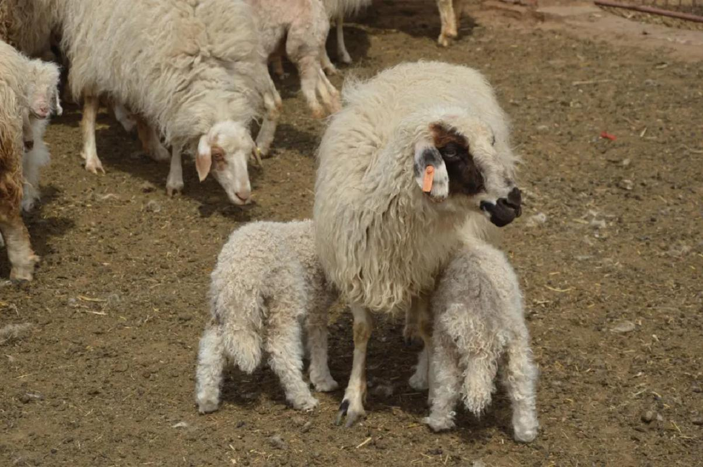
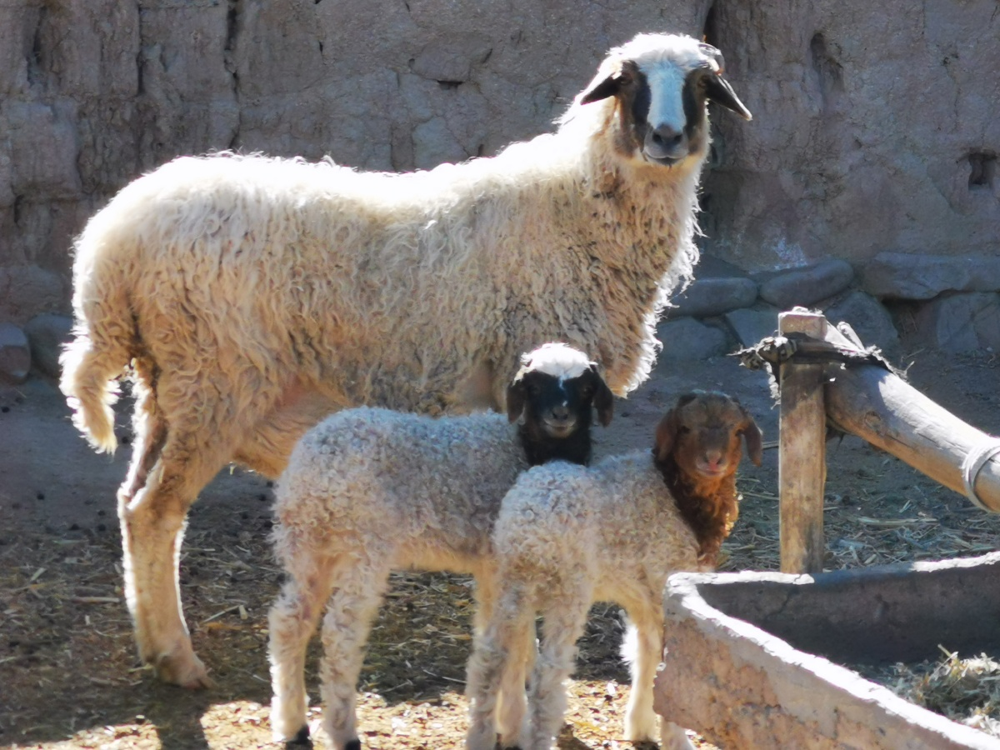
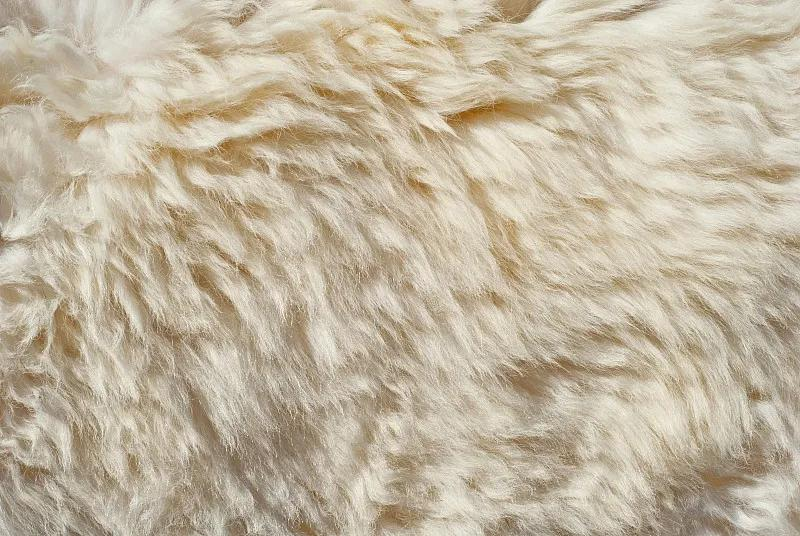
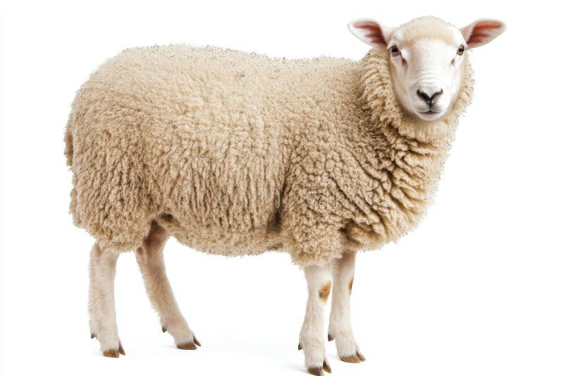
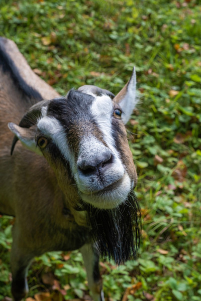
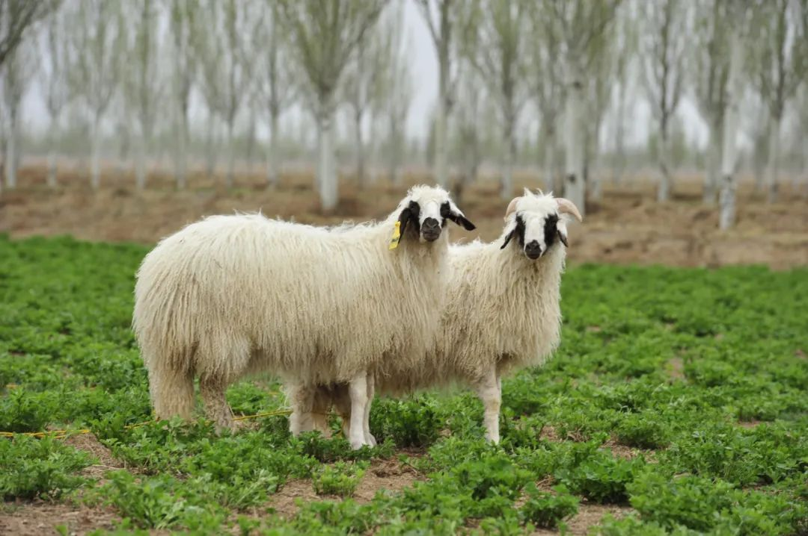
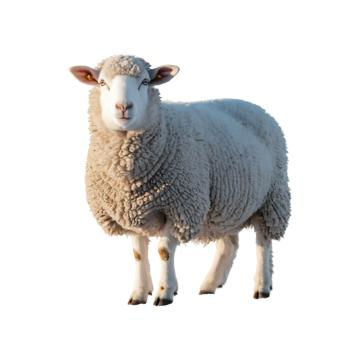
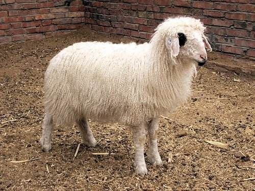
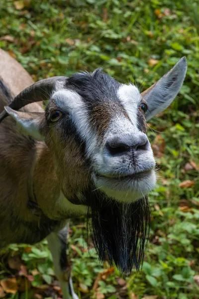

宁夏 · 盐池滩羊
认识滩羊，没那么容易
滩羊是我国特有的裘皮用绵羊，头面深黑、身披卷毛、肉质细嫩。可在羊群里，真正的滩羊和普通绵羊、山羊混在一起——你分得清吗？
国家地理标志

黑头白身 · 卷毛
滩羊的经典外观
三站训练，从入门到认得出
全程约 5 分钟
01 · 认识
滩羊画像
先掌握滩羊的五大特征，知道它和普通绵羊、山羊差在哪。
特征课
02 · 识别
火眼金睛
看一张张羊的照片，判断「是滩羊还是不是」，错题即时讲解。
8 张照片
03 · 考验
知识闯关
五个滩羊冷知识快问快答，看看你记住了多少。
5 道问答
STATION 01 · 认识
先给滩羊画张像
滩羊（Tan Sheep）是我国珍贵的裘皮用绵羊品种，记住下面这五条，就能认出它。

一只标准滩羊长什么样？
滩羊成年后体格中等、体质结实，被毛白色，头部和四肢下部多为黑色或深色，尾巴短小下垂。最迷人的，是它那身自然卷曲、如波浪般的羊毛。
头面深黑
白身卷毛
短尾下垂
公羊有角
适应荒漠草原

滩羊卷毛自然弯曲如波浪，羔羊期毛卷最美，是「二毛裘皮」的原料。
白身卷毛
滩羊被毛为白色，羊毛自然弯曲，像一浪浪的波纹。羔羊期的毛卷尤为美观，是制作「二毛裘皮」的原料。
头面深黑
滩羊的头部、耳缘和四肢下部多为黑色或深色，与白色身体形成鲜明对比。这是区分普通白绵羊的关键。
二毛裘皮
滩羊羔羊约出生 30 天所产的皮称「二毛皮」，毛穗自然卷曲、轻柔保暖，是我国传统的珍贵裘皮，滩羊也因此成名。
短尾下垂
滩羊尾巴短小而垂，不像有些绵羊有肥大的尾脂。加上细长健壮的四肢，整体显得精干利落。
荒漠里的美味
滩羊适应干旱、半干旱的荒漠草原，饮碱水、食百草，因此肉质细嫩、膻味轻，盐池滩羊是地理标志产品。
怎么区分？
普通绵羊通体白色、脸面无黑斑；山羊有胡须、尾巴上翘、角更尖长。滩羊则是「黑头白身 + 卷毛」。
STATION 02 · 识别
火眼金睛
下面会依次出现 8 张羊的照片，请判断：这是滩羊，还是不是？
第 1 / 8 题
0 分
照片






这是一只滩羊吗？
回答正确
识别要点……
STATION 03 · 考验
滩羊知识闯关
五道快问快答，检验你对滩羊的了解。
第 1 / 5 题
0 分
题目
结业评级
你是……
0 / 130